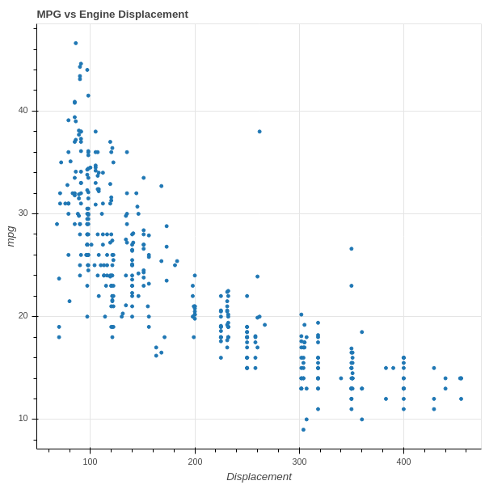

March 24, 2020
Linear regression is a prototypical machine learning algorithm. To get a feel for it, let’s look at some data on the relationship between engine size and gas mileage for a group of cars (see UCI-auto-mpg or, for a nicely formatted csv version, kaggle-auto-mpg).
In its simplest version, we start with the assumption that a particular quantity \(y\) that we would like to understand depends on a quantity \(x\) that we know through a linear relationship: Also, we have \(x\in\R\).
Here is a picture:
{class=“center”}
% latex macros \newcommand{\R}{\mathbf{R}} \hypersetup{colorlinks=true,linkcolor=blue}